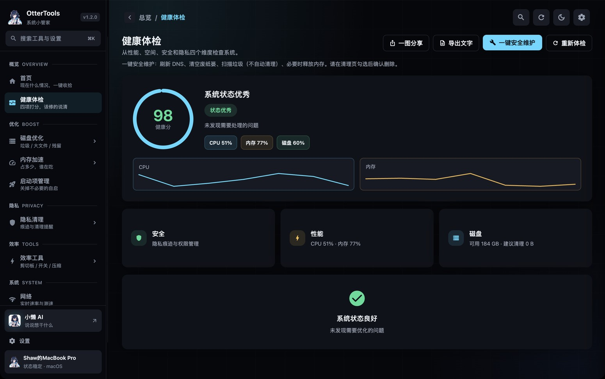
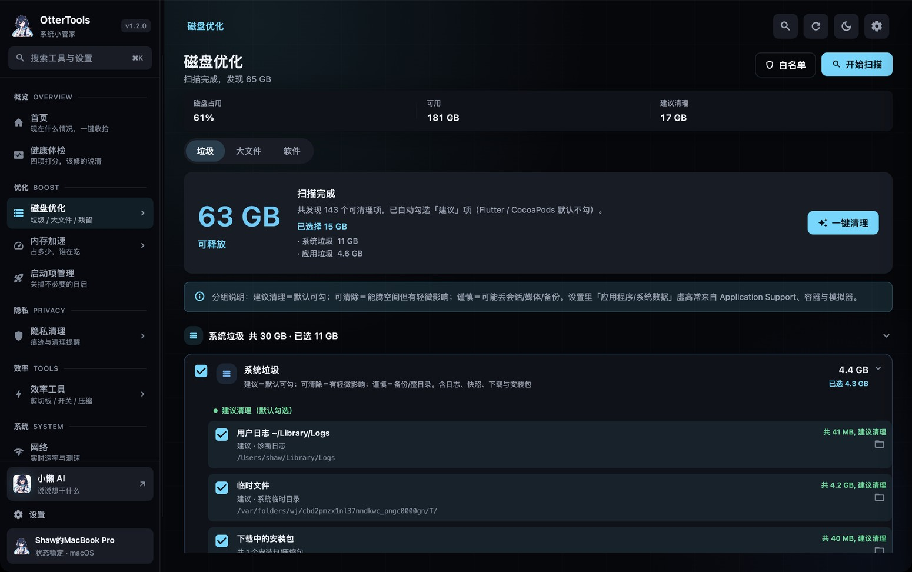
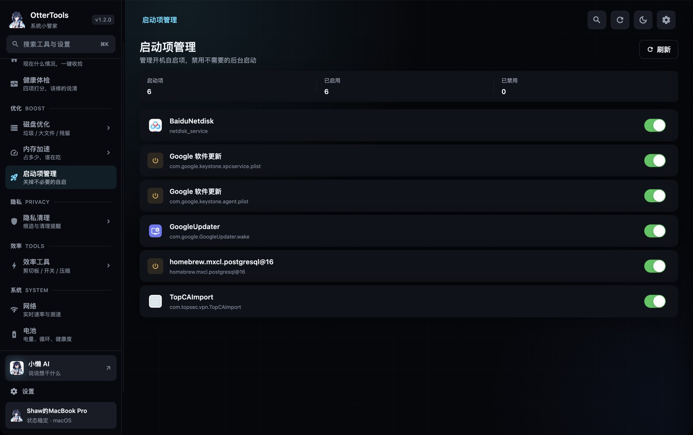
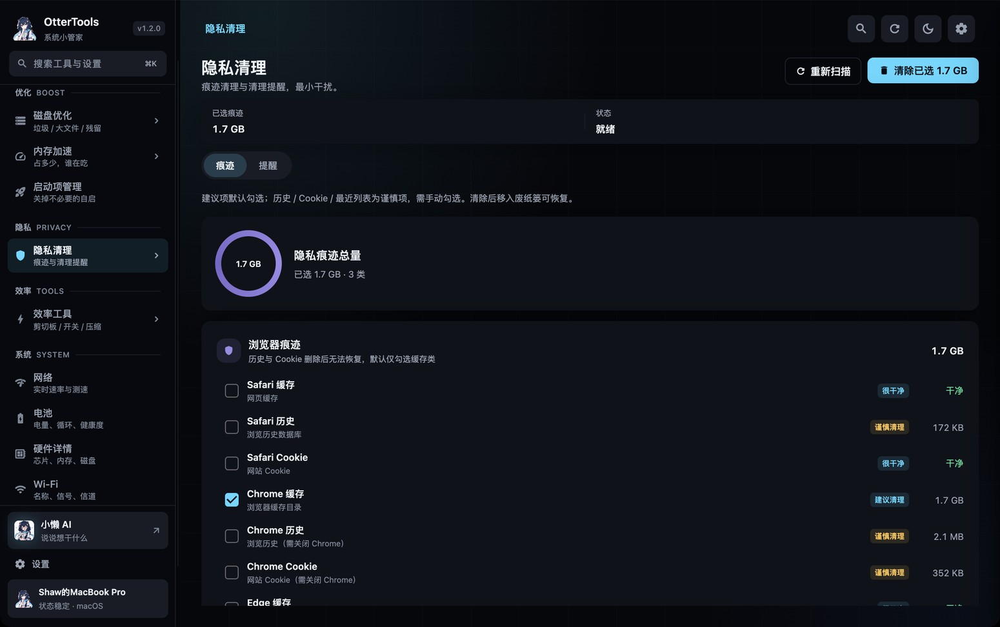
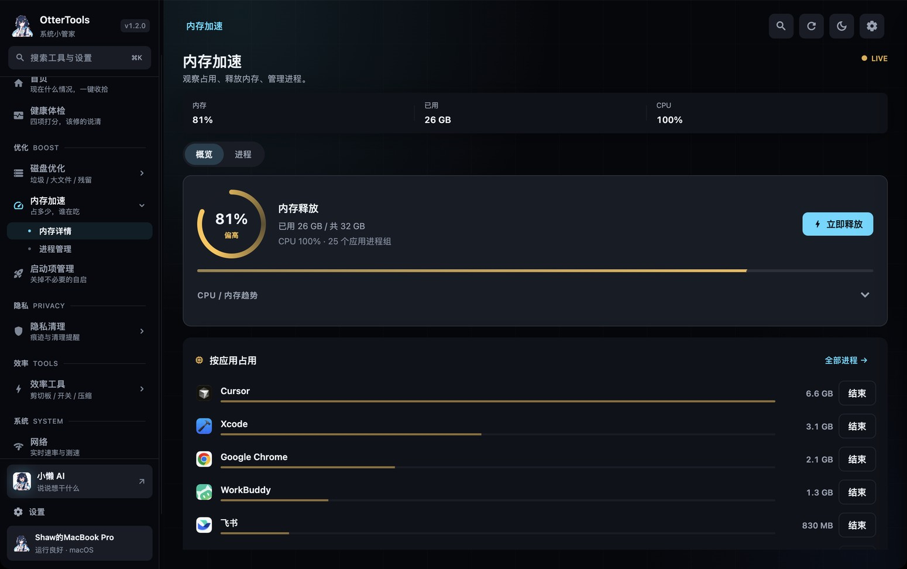
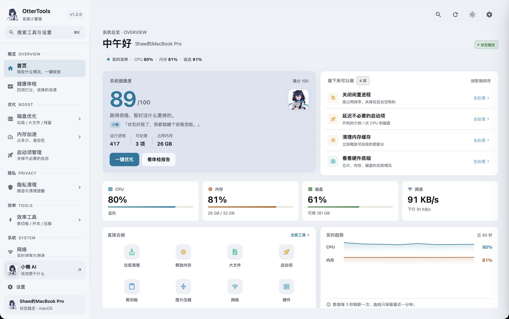

01
体检中心
打开先给你一份体检：左边一个大数字是健康分，下面一句话说清现在什么状况， CPU、内存、磁盘、网速排成一行实时跳。右边是「接下来可以做」，每一条都能点进去。
- 问题清单按风险分级，每条都说清是什么、要不要动
- 能导出 Markdown 报告，换个电脑也带着走
- 近 7 天磁盘 / 内存 / CPU 趋势，按小时采样

不是那种「一键加速」然后啥也没变的软件。每一项都能看到具体删了什么、释放了多少。
打开先给你一份体检：左边一个大数字是健康分，下面一句话说清现在什么状况， CPU、内存、磁盘、网速排成一行实时跳。右边是「接下来可以做」，每一条都能点进去。

垃圾、大文件、软件分三栏。删之前能看到路径，能直接在 Finder 里打开确认。

开机自启都列在一页里，哪些该留、哪些纯属厂家塞的，一眼能看出来。

浏览器历史、聊天记录，还有系统用过的痕迹，扫出来一条条列着，你勾哪条它清哪条。 谨慎项默认不勾。这个决定权留给你。

按进程看谁在吃内存，结束掉不该跑的。菜单栏常驻一个内存百分比，抬头就能看见。

不占侧栏，⌘K 就能叫出来：
浅色是冷银底，深色几乎全黑。都只用一种强调色，不花。跟系统走也行。

1 分 02 秒 · 中文配音 · 建议开声音
下载下来是个 DMG，拖进「应用程序」就行。第一次打开如果提示来源不明， 右键点「打开」，或者在「系统设置 → 隐私与安全性」里放行一下。
Intel 机器暂时需要自己编译，源码在下面。
同一只水獭。功能不多，都是我自己每天在用的。
免费。不卖「高级版」，也没内购和订阅这回事。功能全给，不锁。
清理前每一项都能展开看路径，重复文件比对的是内容哈希而不是名字， 白名单里的目录它不碰。卸载软件的时候，用户数据也只丢进废纸篓，不会直接抹掉。
不会。这软件连账号都没有，也不做遥测。扫描和清理全在本机跑。
OtterTools 直译过来就是水獭工具。吉祥物是只蜷成一团的水獭，趴那儿一动不动。 意思很直白：活它干，你躺着。
工程里 Windows 部分已经跑通了，安装包还在打。目前 macOS 版最完整。